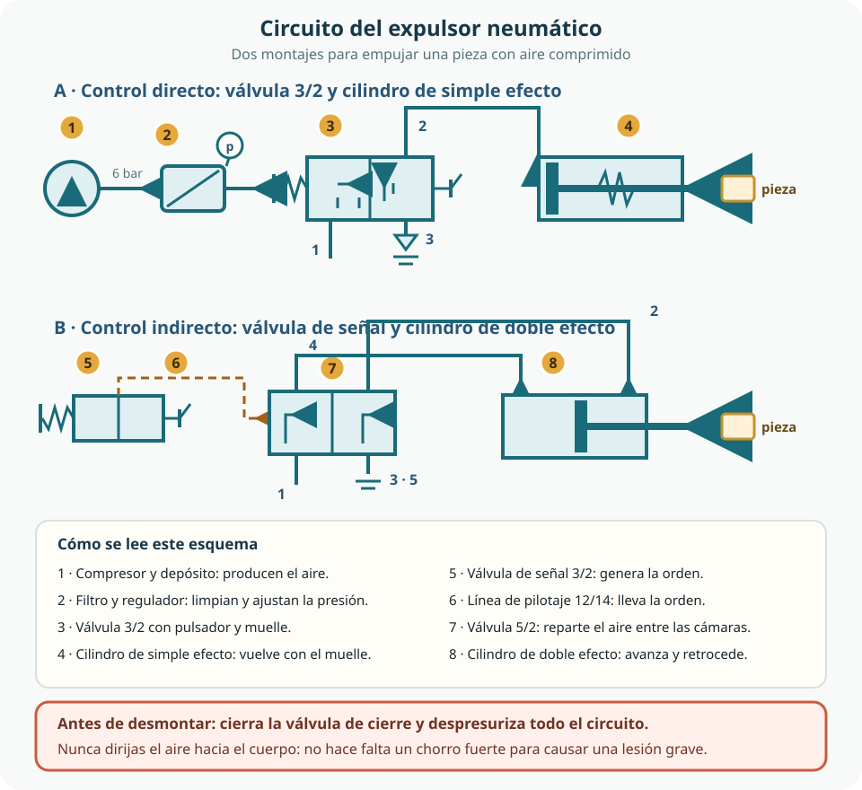

El proyecto común del curso es una estación automática que ordena, guarda y devuelve las herramientas y los componentes del organizador modular. En este tema esa estación empieza a moverse: estudiaremos un expulsor neumático de piezas, un cilindro que empuja una pieza fuera de un almacén y la deja a la vista. El aire comprimido será el músculo. Primero lo dibujaremos y lo probaremos en un simulador; solo después, y siempre con autorización y supervisión docente, se montará con componentes reales y aire a presión.
- explicar qué es el aire comprimido, por qué se usa como transmisor de energía y cuáles son sus límites;
- emplear con soltura las unidades de presión y calcular la fuerza de un cilindro con la relación F = p · A;
- describir la producción, el tratamiento y la distribución del aire comprimido y la función de cada elemento;
- distinguir cilindros de simple y doble efecto y reconocer sus símbolos;
- identificar válvulas distribuidoras 3/2 y 5/2, sus accionamientos y sus retornos, y las válvulas de regulación de caudal y de escape;
- leer y dibujar circuitos neumáticos sencillos con simbología normalizada;
- montar o simular con supervisión un expulsor neumático, aplicando las medidas de seguridad antes de cada maniobra.
1. El aire comprimido como forma de energía
La neumática es la técnica que utiliza aire comprimido como transmisor de energía: el aire, empujado por un compresor, se guarda a presión y después se deja escapar de forma controlada para producir movimientos y fuerzas. Es una tecnología muy extendida en fábricas, talleres y máquinas automáticas porque es sencilla, limpia y rápida: abrir una válvula basta para poner en marcha un cilindro.
El aire tiene propiedades que explican por qué se usa y también cuáles son sus límites. Es abundante, no cuesta obtenerlo y no necesita volver por un circuito cerrado: tras trabajar se expulsa a la atmósfera. Es elástico o compresible, de modo que puede almacenarse en un depósito y liberarse de golpe; esa misma elasticidad hace que un cilindro neumático no mantenga una posición exacta frente a cargas variables. Y es limpio y no inflamable, algo decisivo en ambientes donde una chispa eléctrica sería peligrosa.
Rápido y sencillo de controlar
Los cilindros neumáticos alcanzan velocidades altas, soportan atascos y arranques frecuentes y se controlan con válvulas robustas y baratas. Además, el aire escapa sin dejar residuo ni contaminar el puesto de trabajo.
Poco preciso frente a la carga
Como el aire se comprime, no se mantiene una posición intermedia estable si la fuerza cambia. Si hace falta precisión, se combinan con topes, guías o sistemas eléctricos.
Ruidoso y con humedad
El aire que se expande en el escape produce mucho ruido, y el aire húmedo deja agua y aceite en el circuito. Los silenciadores y los purgadores existen por estos motivos, no por decoración.
La energía que no se ve
Un circuito neumático sin compresor en marcha sigue conteniendo energía: hay aire a presión en el depósito, en las tuberías y en las mangueras. El producto de la presión por el volumen del aire guardado es una energía disponible que puede liberarse de forma repentina. Por eso un circuito se considera en tensión hasta que se purge y un manómetro confirma que la presión ha bajado a cero.
| Aspecto | Ventaja | Límite o precaución |
|---|---|---|
| Disponibilidad | El aire está en todas partes; no hay que fabricarlo ni almacenarlo en contenedores especiales. | Comprimir aire consume bastante energía eléctrica y las fugas la desperdician sin que se note. |
| Seguridad de uso | No es inflamable y no hay riesgo de chispa eléctrica en el actuador. | Sigue siendo energía almacenada: presión, latigazo de manguera, atrapamiento y ruido son peligros reales. |
| Velocidad de respuesta | El cilindro responde en cuanto la válvula deja pasar el aire; admite ciclos muy repetidos. | El escape ruidoso y el golpe al final de carrera exigen silenciadores, amortiguación y topes. |
| Control de la fuerza | La fuerza depende sobre todo de la presión y de la superficie del émbolo, y se regula con mucha facilidad. | La fuerza no se mantiene constante frente a cargas que varían y no conviene usarla para posicionar con precisión. |
| Limpieza | El aire de escape se deja salir a la atmósfera sin residuos peligrosos. | El aire comprimido arrastra humedad, partículas y restos de aceite: hay que tratarlo antes de usarlo. |
2. Presión, fuerza y superficie: F = p · A
La presión mide cómo se reparte una fuerza sobre una superficie: es la fuerza que actúa sobre cada unidad de área, p = F / A. De esa definición sale la expresión que usaremos en todo el tema:
F = p · A fuerza = presión × superficie
Si conocemos la presión del aire y la superficie del émbolo, sabemos con cuánta fuerza empuja el vástago. Este es el cálculo que permite elegir un cilindro: no basta con que «quepa», tiene que poder vencer la carga prevista.
Unidades que conviene dominar
La unidad del Sistema Internacional es el pascal (1 Pa = 1 N/m²), pero resulta tan pequeña que en neumática se usan múltiplos y el bar. Los manómetros de los circuitos indican presión relativa: la diferencia entre la presión del aire y la presión atmosférica.
| Unidad | Equivalencia | Cuándo aparece |
|---|---|---|
| pascal (Pa) | 1 Pa = 1 N/m² | Unidad del Sistema Internacional; sirve para calcular con metros y newtons. |
| kilopascal (kPa) | 1 kPa = 1 000 Pa | Catálogos técnicos y datos de fabricantes. |
| bar | 1 bar = 100 000 Pa = 0,1 MPa | Lectura habitual de los manómetros de red: una red de taller suele trabajar entre 4 y 8 bar relativos. |
| megapascal (MPa) | 1 MPa = 10 bar = 1 N/mm² | Piezas mecánicas y presiones elevadas. |
| newton (N) | 1 N ≈ 0,102 kgf | Fuerza que ejerce el vástago, comparable con el peso de una masa. |
Ejemplo razonado: la fuerza del expulsor
La superficie útil de un cilindro es la cara circular del émbolo, A = π · d² / 4. Supongamos que el expulsor de la estación lleva un cilindro de diámetro interior 40 mm y que se regulará a 6 bar. Calculamos paso a paso.
- Superficie del émbolo: A = π · (40 mm)² / 4 = π · 1600 mm² / 4 ≈ 1 257 mm² (unos 12,6 cm²).
- Presión en unidades de trabajo: 6 bar = 0,6 N/mm² (o 600 000 Pa, es decir, 0,6 MPa).
- Fuerza teórica de avance: F = 0,6 N/mm² · 1 257 mm² ≈ 754 N, el equivalente al peso de unos 77 kg.
Con la misma presión, otras combinaciones cambian mucho el resultado. En la siguiente tabla se comparan valores de cilindros habituales en un taller escolar; todas las fuerzas están calculadas con la fórmula y no incluyen rozamientos ni pérdidas reales.
| Diámetro interior | Superficie del émbolo | Fuerza a 3 bar | Fuerza a 6 bar |
|---|---|---|---|
| 25 mm | ≈ 491 mm² | ≈ 147 N | ≈ 295 N |
| 32 mm | ≈ 804 mm² | ≈ 241 N | ≈ 483 N |
| 40 mm | ≈ 1 257 mm² | ≈ 377 N | ≈ 754 N |
| 50 mm | ≈ 1 963 mm² | ≈ 589 N | ≈ 1 178 N |
Leer la tabla sin equivocarse
- La fuerza crece con el cuadrado del diámetro: al pasar de 25 a 50 mm la superficie se multiplica por cuatro, no por dos.
- La fuerza es proporcional a la presión: a la mitad de presión, la mitad de fuerza. Bajar la presión es también una medida de seguridad.
- En el retroceso hay menos fuerza: el vástago ocupa parte de la superficie, así que el área útil es menor (con un émbolo de 40 mm y un vástago de 16 mm quedan unos 1 056 mm², es decir, unos 633 N a 6 bar).
- Las pérdidas existen: rozamiento, fugas y contrapresión reducen la fuerza real. La fuerza calculada es un límite teórico, útil para no quedarse cortos ni pasarse.
3. Producir y almacenar el aire comprimido
El aire comprimido no se encuentra en la naturaleza a presión: hay que fabricarlo. El compresor transforma energía mecánica —normalmente de un motor eléctrico— en energía de presión. Los compresores alternativos de émbolo son habituales en talleres pequeños; los de tornillo permiten funcionar de forma continua en instalaciones grandes.
Al comprimirse, el aire se calienta y arrastra humedad. Después del compresor hay una refrigeración y un separador donde el vapor de agua se condensa. El aire tratado se almacena en un depósito o acumulador, que cumple tres funciones: guardar energía disponible, amortiguar las pulsaciones del compresor y permitir que el motor no trabaje de forma continua. Un presostato arranca el motor cuando la presión baja y lo detiene cuando se alcanza el valor ajustado.
| Elemento | Función | Por qué importa |
|---|---|---|
| Compresor | Aspira aire del ambiente y lo entrega a presión. | Es una máquina que solo maneja personal autorizado, con formación y revisión periódica. |
| Refrigeración | Enfría el aire caliente de la compresión y facilita que el agua condense. | El aire caliente es un foco de quemadura leve y daña mangueras y juntas. |
| Depósito o acumulador | Almacena aire a presión y amortigua las pulsaciones. | Es un equipo a presión: no se golpea, no se modifica y dispone de válvula de seguridad y manómetro. |
| Válvula de seguridad | Deja escapar aire si la presión supera el valor tarado. | Es la protección principal frente a la sobrepresión; nunca se anula, se bloquea ni se regula a capricho. |
| Manómetro | Mide la presión disponible en cada momento. | Sin lectura de manómetro no existe control de la presión de trabajo. |
| Purga de condensados | Expulsa el agua y los restos que se acumulan en el fondo. | El agua provoca corrosión y arrastra aceite hacia el circuito neumático. |
| Presostato | Arranca y detiene el motor entre dos valores de presión. | Evita sobrepresiones por funcionamiento continuado y ahorra energía. |
4. Del compresor al punto de uso: tratamiento y distribución
El aire que sale del compresor no está listo para trabajar: contiene agua condensada, partículas y restos de aceite, y su presión puede ser mayor que la que admite la máquina que vamos a alimentar. El tratamiento del aire corrige todo eso mediante una secuencia de equipos que en muchas máquinas se agrupa bajo el nombre de unidad de acondicionamiento.
| Elemento | Qué hace | Qué ocurre si falta |
|---|---|---|
| Filtro con separador de agua | Retiene partículas y hace girar el aire para que el agua y el aceite caigan al fondo del vaso. | Partículas y agua llegan a las válvulas: desgaste, agarrotamiento y movimientos irregulares. |
| Secador | Reduce la humedad del aire; en instalaciones grandes se usa secado por frío o por adsorción. | La condensación sigue viajando por la red y aparece agua en los puntos bajos y en los escapes. |
| Regulador de presión | Fija la presión de trabajo en un valor inferior al de la red y suele incluir manómetro y escape de alivio. | Cada actuador recibe más presión de la que necesita y se compromete su seguridad. |
| Lubricador | Añade una fina niebla de aceite cuando el fabricante lo exige para la vida útil del componente. | Hay equipos que no deben lubricarse: el aceite puede dañar juntas y ensuciar el ambiente. |
| Purga | Vacía periódicamente el agua acumulada en el vaso del filtro y en los puntos bajos de la red. | El agua vuelve a entrar en el circuito justo cuando se abre la válvula. |
La red de distribución
El aire viaja por tuberías y ramales hasta las tomas de uso. Cada toma suele disponer de una válvula de cierre —que es la que corta el paso para intervenir con seguridad— a la que se conectan mangueras flexibles mediante racores de acción rápida. La red se diseña con secciones suficientes para que la presión no caiga demasiado a lo largo del recorrido, con los ramales inclinados y con purgas en los puntos bajos, donde se acumula el agua.
Las fugas merecen un comentario aparte: son silenciosas, aparentemente inocentes y permanentes. Una instalación con fugas mantiene el compresor trabajando más horas, con el gasto energético y el ruido correspondientes. Detectar fugas, revisar racores y mangueras y sustituir lo que esté deteriorado forma parte del mantenimiento.
Los peligros del aire comprimido, explicados
La utilización de equipos accionados por aire comprimido presenta riesgos comunes que conviene conocer con precisión, porque son los mismos que aparecerán en el taller.[1]
| Peligro | Cómo se produce | Medida preventiva |
|---|---|---|
| Latigazo de la manguera | La manguera se rompe o se suelta con presión y se mueve de forma repentina. | Mangueras del tipo adecuado a la presión, revisadas antes de usar; acoplamientos que cortan el aire y despresurizan al desconectar; fusibles neumáticos en las instalaciones; nunca tirar de la manguera. |
| Aire proyectado al cuerpo | Una pistola o un escape dirige aire a gran velocidad hacia la piel, los ojos o los oídos. | Prohibido dirigir aire a personas. El aire a presión puede atravesar la piel y penetrar por los orificios del cuerpo; las partículas y las gotas de agua o aceite arrastradas dañan los ojos. |
| Proyección de partículas y útiles | El aire arrastra polvo, o una boquilla o un útil mal sujeto sale despedido. | Usar boquillas de seguridad si son imprescindibles, comprobar el acoplamiento de los útiles y proteger los ojos. |
| Ruido | El aire se expande al escapar y genera niveles sonoros elevados. | Silenciadores de escape y medición del ruido; en el aula se trabaja con circuitos pequeños y escapes silenciados. |
| Sobrepresión en componentes | Se alimenta un elemento con más presión de la que admite su placa de características. | Regulador ajustado a la presión de trabajo, con manómetro a la vista; nunca se supera el valor de placa. |
| Movimiento inesperado | Al conectar el aire o al accionar una válvula, el vástago avanza o retrocede de golpe. | Conectar primero las mangueras y dar aire después; mantener manos y cara fuera de la trayectoria; comprobar la posición de la válvula antes de presurizar. |
5. Actuadores: cilindros de simple y doble efecto
Los actuadores neumáticos convierten la energía del aire en movimiento. El más habitual es el cilindro, que produce un desplazamiento lineal: dentro de una camisa cilíndrica se desliza un émbolo unido a un vástago, y las juntas impiden que el aire pase de una cámara a otra. Otros actuadores producen giros o movimientos de pinza, pero el expulsor de nuestra estación necesita empujar en línea recta.
Simple efecto: el muelle devuelve el vástago
En un cilindro de simple efecto solo hay una entrada de aire, en la cámara posterior. Cuando llega presión, el émbolo avanza y comprime un muelle interior; cuando el aire escapa, el muelle devuelve el vástago a su posición inicial. Se alimenta con una válvula 3/2, consume menos aire y basta para tareas como expulsar, sujetar o marcar. Su fuerza de retroceso la determina el muelle, no el aire.
Doble efecto: el aire empuja en los dos sentidos
Un cilindro de doble efecto tiene dos cámaras y dos entradas de aire. Alimentando la cámara posterior, el vástago avanza; alimentando la anterior, retrocede. Se gobierna con una válvula 5/2, y como el aire empuja en ambos sentidos es el adecuado cuando hace falta fuerza y control en el retorno. La fuerza de avance y la de retroceso no son iguales, porque el vástago reduce la superficie útil en el lado anterior.
| Criterio | Simple efecto | Doble efecto |
|---|---|---|
| Entradas de aire | Una, en la cámara posterior. | Dos, una por cada cámara. |
| Cómo retrocede | Mediante un muelle interior. | Con aire a presión en la cámara anterior. |
| Válvula habitual | Válvula 3/2 con retorno por muelle. | Válvula 5/2, monoestable o biestable. |
| Fuerza | La de avance depende de presión y superficie; el retorno es más débil. | Fuerte en los dos sentidos, algo menor en el retroceso por el vástago. |
| Aire consumido | Menos: solo se alimenta el avance. | Más: se alimentan las dos cámaras. |
| Uso en la estación | Expulsor básico de piezas y sujeción sencilla. | Expulsor con retroceso controlado y ciclos repetidos. |
Datos que definen un cilindro
- Diámetro interior y carrera: la carrera es la distancia que recorre el vástago, y determina hasta dónde llega el expulsor.
- Presión de trabajo: limitada por la placa de características; condiciona la fuerza disponible.
- Amortiguación: muchos cilindros incorporan amortiguación regulable para que el final de carrera no sea un golpe seco.
- Conexiones: racores con tubo flexible, que no deben quedar tirantes ni doblados.
- Detección de posición: los cilindros con imán incorporado permiten detectar el final de carrera con sensores, algo que será imprescindible cuando la estación se automatice en temas posteriores.
6. Válvulas distribuidoras: 3/2 y 5/2
Las válvulas son los elementos que deciden por dónde y cuándo pasa el aire. Las que dirigen el aire hacia los actuadores se llaman válvulas distribuidoras y se nombran con dos números separados por una barra: el primero indica cuántas vías o conexiones tiene y el segundo, cuántas posiciones puede adoptar.
Los números de las vías
En la simbología normalizada las conexiones se identifican con cifras que conviene memorizar, porque aparecen igual en todos los esquemas y en los catálogos:
- 1: entrada de aire a presión (alimentación).
- 2 y 4: salidas de trabajo, las que van a las cámaras del cilindro.
- 3 y 5: escapes, por donde sale el aire usado hacia la atmósfera, normalmente a través de un silenciador.
- 12 y 14: líneas de pilotaje neumático, es decir, la presión de mando que hace conmutar la válvula desde otra válvula más pequeña.
Accionamientos y retornos
El accionamiento es lo que mueve la válvula: un pulsador o una palanca si lo hace una persona, un rodillo o una leva si lo hace la propia máquina, un pilotaje neumático si lo hace la presión de aire de otra válvula, y un electroimán en las válvulas eléctricas. El retorno define qué ocurre cuando el accionamiento cesa:
- Monoestable (retorno por muelle): al soltar el accionamiento, la válvula vuelve sola a su posición de reposo. Es lo que ocurre en el pulsador de nuestro expulsor básico.
- Biestable (memoria): la válvula se queda en la última posición hasta que recibe una orden en el pilotaje contrario. Es la válvula 5/2 del montaje con control indirecto.
| Válvula | Qué significa | Para qué se usa | Cómo se acciona |
|---|---|---|---|
| 3/2 | Tres vías (1, 2 y 3) y dos posiciones: el aire pasa o no pasa. | Cilindros de simple efecto; también como válvula de señal en el control indirecto. | Pulsador, palanca, pedal o rodillo, con retorno por muelle (normalmente cerrada o normalmente abierta). |
| 5/2 | Cinco vías (1, 2, 4, 3 y 5) y dos posiciones: envía presión a una cámara y conecta la otra al escape. | Cilindros de doble efecto, como el del expulsor con control indirecto. | Pilotaje neumático por uno de los lados con retorno por muelle (monoestable) o por ambos lados (biestable). |
Por qué existen los dos montajes
Con una válvula 3/2 accionada a mano y un cilindro pequeño ya tenemos un expulsor que funciona. Pero el caudal que puede atravesar esa válvula es reducido y su accionamiento exige esfuerzo: el cilindro avanza despacio. Si el actuador es grande, se intercala una válvula mayor, la 5/2, que recibe la orden a través de un pilotaje de otra válvula pequeña. Es la diferencia entre control directo e control indirecto, que aplicaremos en la sección 8.
7. Caudal, escapes y lectura de un esquema neumático
La presión decide la fuerza y el caudal decide la velocidad. Estas dos ideas se controlan con elementos distintos, y confundirlas es uno de los errores más frecuentes al empezar con neumática.
Regular la velocidad sin cambiar la fuerza
Para que el vástago avance más despacio no se baja la presión —eso reduciría también la fuerza—, sino que se limita el aire que puede escapar. Los reguladores de caudal son válvulas de estrangulamiento, casi siempre acompañadas de una antirretorno: frenan el paso del aire en un sentido y lo dejan libre en el contrario. Colocadas en la línea de escape del cilindro, permiten ajustar la velocidad de avance o de retroceso sin tocar la presión de trabajo. Este ajuste también suaviza el golpe al final de carrera.
Escapes rápidos y silenciadores
- La válvula de escape rápido evita que el aire usado tenga que recorrer toda la manguera de vuelta hasta la distribuidora: lo expulsa junto al cilindro y así el retroceso es más veloz.
- Los silenciadores se montan en los puertos de escape (3 y 5). El aire que se expande a la atmósfera genera mucho ruido; un silenciador no elimina el sonido, pero lo reduce de forma notable y no debe convertirse en un nuevo riesgo: tiene que quedar bien sujeto para que la presión no lo desprenda.
Leer un esquema, paso a paso
Un esquema neumático no se lee como un texto, sino como un recorrido: se sigue el aire desde su origen hasta el actuador y se identifican los componentes con su símbolo y su referencia. Estas preguntas funcionan con cualquier circuito:
1. ¿De dónde viene el aire?
Localizo la fuente de energía, la unidad de acondicionamiento y el valor de presión ajustado en el regulador y su manómetro.
2. ¿Cómo entra?
Identifico la conexión 1 de cada válvula y sigo las líneas de alimentación y de pilotaje.
3. ¿Qué hace cada válvula?
Cada cuadro es una posición: la flecha indica paso y la «T» indica bloqueo. El cuadro activo es el que queda junto al accionamiento que actúa en ese momento.
4. ¿Hacia dónde va el aire?
Compruebo las conexiones 2 y 4 hacia las cámaras del cilindro y las conexiones 3 y 5 con sus silenciadores.
5. ¿Qué se mueve y cuándo?
Describo el estado de reposo y el estado accionado, y en qué sentido se desplaza el vástago en cada uno.
6. ¿Hay aire retenido?
Busco los puntos donde queda presión tras cortar la alimentación y compruebo que existe una forma segura de purgarlos.

Cómo se lee nuestro circuito
En el montaje A, el aire sale del compresor, se filtra y se regula, y llega a la conexión 1 de la válvula 3/2. Mientras no se pulsa, la válvula está en su posición de reposo: el aire no pasa al cilindro y la cámara posterior queda conectada al escape 3. Al pulsar, la válvula cambia de posición, el aire entra por 2 y el vástago avanza comprimiendo el muelle; al soltar, el muelle devuelve la válvula y el muelle del cilindro devuelve el vástago, mientras el aire escapa por el silenciador.
En el montaje B, el pulsador de la válvula de señal no alimenta directamente al cilindro: envía una presión de pilotaje que hace conmutar la válvula 5/2. Esta válvula dirige el aire a la conexión 4 —el vástago avanza— o a la conexión 2 —el vástago retrocede—, dejando escapar por 3 y 5 el aire de la cámara contraria. Como la válvula es biestable, conserva la última posición aunque dejemos de pulsar.
8. El expulsor de la estación: control directo e indirecto, montaje y seguridad
Control directo: la válvula actúa sobre el cilindro
Es el montaje más sencillo: una válvula 3/2 accionada con pulsador alimenta directamente un cilindro de simple efecto. Tiene pocos componentes, se monta y se comprende enseguida y es ideal para el primer contacto con la neumática. Sus límites aparecen cuando el actuador crece: todo el caudal del cilindro atraviesa una válvula pequeña, el movimiento se vuelve lento y el esfuerzo que hay que hacer sobre el accionamiento aumenta.
Control indirecto: una orden pequeña mueve una válvula grande
En el control indirecto la orden y la potencia se separan. Una válvula de señal pequeña, junto al puesto del operador, envía presión por una línea de pilotaje hasta la válvula 5/2 que alimenta el cilindro de doble efecto. Así la válvula de señal puede estar lejos del actuador, la línea de pilotaje es corta y de poco caudal, y el aire del trabajo circula por una válvula mayor con menos pérdidas. A cambio, hay más componentes que documentar y más puntos donde comprobar que no queda aire retenido.
| Aspecto | Control directo | Control indirecto |
|---|---|---|
| Componentes | Válvula 3/2 de accionamiento manual y cilindro de simple efecto. | Válvula de señal 3/2, línea de pilotaje y válvula 5/2 que alimenta un cilindro de doble efecto. |
| Velocidad y fuerza | Limitadas por el caudal que admite la válvula pequeña; el retorno depende del muelle. | Mayores: el aire del trabajo pasa por una válvula de mayor sección y empuja en los dos sentidos. |
| Dónde está el mando | Junto al actuador, con la mano cerca del movimiento. | Puede situarse lejos, con la línea de pilotaje separada de la de potencia. |
| Cuándo elegirlo | Piezas ligeras, ciclos esporádicos y primeras prácticas de montaje. | Ciclos repetidos, piezas que exigen más fuerza o un retroceso controlado. |
| Qué hay que vigilar | Que el muelle del cilindro pueda devolver el vástago con fiabilidad. | La posición que recuerda la válvula biestable y el movimiento inesperado al dar presión. |
Antes de montar: probar en el simulador
Un simulador permite dibujar el circuito, accionarlo y observar el comportamiento de cada elemento sin usar aire ni exponer a nadie. No sustituye al montaje real, pero evita errores de conexión, reduce el tiempo de práctica y documenta el diseño antes de tocar componentes.
Elegir los componentes, colocarlos con su símbolo y numerarlos: 1S1 para la válvula de señal, 1V1 para la distribuidora y 1A para el cilindro.
Antes de accionar nada: ¿por dónde circularía el aire? ¿Está el vástago recogido? ¿Hay aire retenido en alguna cámara?
Pulsar la señal, observar el avance, soltar, observar el retorno. Anotar qué válvula cambia de posición en cada paso.
Comprobar que la carrera llega a la pieza sin golpearla de más, que la velocidad es razonable y que el retorno es completo.
Cambiar lo que no funcione y volver a simular. Documentar la decisión y su motivo antes de pasar al montaje real.
Montaje real: solo con autorización
Si el profesorado autoriza el montaje con aire a presión, el circuito se arma sobre el panel con los tubos ya cortados: primero se conectan todas las mangueras y los racores, y solo después se da aire. La presión de trabajo la fija el docente con el regulador, se lee en el manómetro y nunca supera la indicada en la placa de cada componente. Antes de accionar nada se comprueba que la zona de delante del vástago esté libre, que no haya manos ni caras en la trayectoria y que la pieza esté bien colocada.
| Peligro | Control prioritario | Conducta segura complementaria |
|---|---|---|
| Atrapamiento entre vástago y tope | Zona de recorrido aislada con barrera o valla, y topes exteriores bien sujetos. | Nadie introduce las manos en la trayectoria; se comprueba la posición del vástago antes de presurizar. |
| Latigazo de la manguera | Racores de acción rápida que cortan el aire al desconectar; tubos sujetos y sin tensión. | Mangueras revisadas antes de usar, nunca se tira de ellas y se recogen ordenadamente al terminar. |
| Movimiento inesperado del cilindro | Presión limitada por el regulador y estado de la válvula comprobado antes de dar aire. | Conectar todos los tubos antes de abrir la alimentación y avisar antes de accionar. |
| Proyección de la pieza | Almacén y bandeja de recogida que guían la pieza; carrera ajustada al recorrido previsto. | Verificar que la pieza está bien colocada y que nadie está en la dirección de salida. |
| Ruido de escape | Silenciadores en los puertos 3 y 5 de las válvulas. | Trabajar con circuitos pequeños y ciclos cortos; avisar si el ruido aumenta o cambia. |
| Chorro de aire al manipular | Sustituir el soplado por métodos de limpieza seguros. | No usar el aire para limpiar ropa, piel ni personas, y proteger los ojos. |
| Energía retenida tras cortar el aire | Válvula de cierre en la toma y purga que devuelve el circuito a presión cero. | Confirmar la lectura del manómetro antes de soltar cualquier racor o desmontar un componente. |
Comprueba lo que has aprendido
Tu trabajo estará bien resuelto si puedes explicar el circuito, justificar los cálculos y demostrar que el montaje —o la simulación— se ha hecho con seguridad. No basta con que el vástago se mueva: hay que saber por qué se mueve y qué ocurriría si algo fallara.
| Aspecto | Qué debes demostrar | Evidencias posibles |
|---|---|---|
| Comprender el aire comprimido | Explicar de dónde sale la energía, por qué se almacena y qué peligros implica. | Descripción de la cadena compresor–tratamiento–distribución–actuador y lista de precauciones justificadas. |
| Calcular y justificar | Elegir un cilindro a partir de la fuerza necesaria y de la presión de trabajo que se va a usar. | Cálculo de la superficie del émbolo, fuerza prevista en avance y retroceso, unidades correctas y comprobación con un segundo método. |
| Leer y dibujar esquemas | Identificar componentes, accionamientos y escapes, y describir el estado de reposo y el accionado. | Esquema con simbología normalizada, componentes numerados y explicación escrita de los dos estados. |
| Montar o simular con seguridad | Ejecutar el ciclo sin exponer a nadie y justificar cada medida de seguridad aplicada. | Registro de la simulación, lista de comprobaciones previas, presión de trabajo acordada y resultados del ciclo. |
| Documentar y mejorar | Anotar lo que funcionó, lo que hubo que corregir y qué queda pendiente de comprobar. | Comparación entre el diseño previsto y el resultado, decisiones registradas y propuesta de mejora. |
Preguntas para comprobarlo tú mismo
- Un cilindro de 32 mm de diámetro trabaja a 5 bar. ¿Qué superficie tiene el émbolo y qué fuerza de avance puede desarrollar, como máximo, en teoría?
- Si la presión baja de 6 a 3 bar manteniendo el mismo cilindro, ¿qué le ocurre a la fuerza y a la velocidad si no se toca el regulador de caudal?
- ¿Por qué el retroceso de un cilindro de doble efecto tiene menos fuerza que el avance?
- Dibuja el símbolo de una válvula 3/2 con pulsador y retorno por muelle e indica qué conexiones están comunicadas en reposo y en accionado.
- ¿Qué diferencia hay entre una válvula monoestable y una biestable? ¿Cuál elegirías para un expulsor que debe mantener la posición aunque se suelte el pulsador?
- ¿Para qué sirve una válvula de escape rápido y dónde crees que conviene montarla en un expulsor?
- Explica, en el orden correcto, qué harías antes de sustituir una manguera de un circuito que acaba de funcionar.
- ¿Por qué no se debe dirigir aire comprimido hacia una persona aunque «solo sea aire»?
Glosario del tema
- Aire comprimido
- Aire sometido a una presión superior a la atmosférica, usado como transmisor de energía.
- Actuador
- Elemento que convierte la energía del aire en movimiento; el cilindro es el más habitual.
- Bar
- Unidad de presión equivalente a 100 000 Pa o 0,1 MPa; es la que suele indicar el manómetro de la red.
- Biestable
- Válvula que conserva la última posición en la que quedó, aunque cese el accionamiento.
- Carrera
- Distancia que recorre el vástago de un cilindro entre sus dos posiciones extremas.
- Caudal
- Cantidad de aire que atraviesa una sección por unidad de tiempo; determina la velocidad del actuador.
- Cilindro de doble efecto
- Cilindro con dos cámaras y dos entradas de aire: avanza y retrocede accionado por presión.
- Cilindro de simple efecto
- Cilindro con una sola entrada de aire; retrocede por la acción de un muelle interior.
- Control directo
- Montaje en el que la válvula accionada por la persona alimenta directamente al actuador.
- Control indirecto
- Montaje en el que una válvula de señal envía presión de pilotaje a otra válvula mayor que alimenta al actuador.
- Distribuidora (válvula)
- Válvula que dirige el aire hacia una u otra parte del circuito; se nombra por su número de vías y de posiciones.
- Embolo
- Pieza móvil del cilindro sobre la que actúa la presión del aire.
- Fuerza
- Empuje que ejerce el vástago, igual al producto de la presión por la superficie útil.
- Monoestable
- Válvula que vuelve a su posición de reposo cuando cesa el accionamiento, normalmente por un muelle.
- Pascal
- Unidad de presión del Sistema Internacional; 1 Pa = 1 N/m².
- Pilotaje
- Presión de mando que hace conmutar una válvula desde otra válvula o señal.
- Presión relativa
- Diferencia entre la presión del aire y la atmosférica; es la que miden los manómetros de trabajo.
- Purga
- Acción de expulsar el agua condensada o el aire retenido del circuito.
- Racor
- Elemento que une el tubo o la manguera a una válvula o a un cilindro.
- Regulador de caudal
- Válvula que limita el paso del aire en un sentido para ajustar la velocidad del cilindro.
- Silenciador
- Dispositivo montado en los escapes que reduce el ruido del aire que se expande.
- Unidad de acondicionamiento
- Conjunto de filtro, regulador de presión y, si procede, lubricador que prepara el aire antes de usarlo.
- Vástago
- Barra unida al émbolo que transmite el movimiento al exterior del cilindro.
- Válvula de escape rápido
- Válvula que expulsa el aire usado junto al cilindro para acelerar el retroceso.
Resumen esencial
- La neumática usa aire comprimido como transmisor de energía: es rápido, limpio y sencillo, pero poco preciso frente a cargas y ruidoso en los escapes.
- Un circuito neumático contiene energía almacenada, incluso detenido. Se trabaja en él solo después de cerrar la alimentación y purgar.
- La fuerza de un cilindro se calcula con F = p · A. La superficie crece con el cuadrado del diámetro y la fuerza es proporcional a la presión.
- 1 bar = 100 000 Pa = 0,1 MPa, y 1 N/mm² = 1 MPa = 10 bar. Con presión en bar y superficie en mm², la fuerza sale en newtons multiplicando por 0,1.
- El compresor produce el aire; el depósito lo almacena y amortigua las pulsaciones, con válvula de seguridad, manómetro, presostato y purga de condensados.
- Antes de usarlo, el aire se filtra, se seca y se regula; la unidad de acondicionamiento prepara la presión y la limpieza que exige cada máquina.
- La red de distribución lleva el aire hasta las tomas, con válvula de cierre, mangueras y racores. Las fugas son un gasto continuo de energía.
- El cilindro de simple efecto tiene una entrada y retrocede por muelle; el de doble efecto tiene dos cámaras y se gobierna con una válvula 5/2.
- Las válvulas 3/2 y 5/2 se leen por sus vías (1 alimentación, 2 y 4 trabajo, 3 y 5 escape) y por sus posiciones, y pueden ser monoestables o biestables.
- Los reguladores de caudal ajustan la velocidad sin cambiar la fuerza; los silenciadores reducen el ruido y el escape rápido acelera el retorno.
- El expulsor de la estación se monta con control directo si la tarea es ligera, y con control indirecto cuando hacen falta fuerza y velocidad. En ambos casos, primero se simula y siempre se trabaja con autorización, presión limitada y la zona aislada.
Fuentes y recursos fiables
- [1] INSST — NTP 631: Riesgos en la utilización de equipos y herramientas portátiles accionados por aire comprimido.
- [2] INSST — Guía para la gestión preventiva de las instalaciones de los lugares de trabajo: equipos a presión (2023, PDF).
- [3] BOE — Orden de 28 de junio de 1988: Instrucción Técnica Complementaria MIE-AP17, instalaciones de tratamiento y almacenamiento de aire comprimido.
- [4] ISO — ISO 1219-1:2012, Transmisiones hidráulicas y neumáticas: símbolos gráficos y esquemas de circuitos (ficha pública en inglés; la norma completa es de pago).